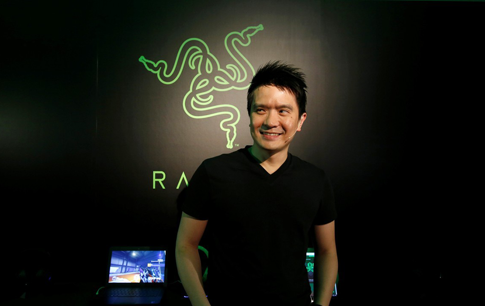
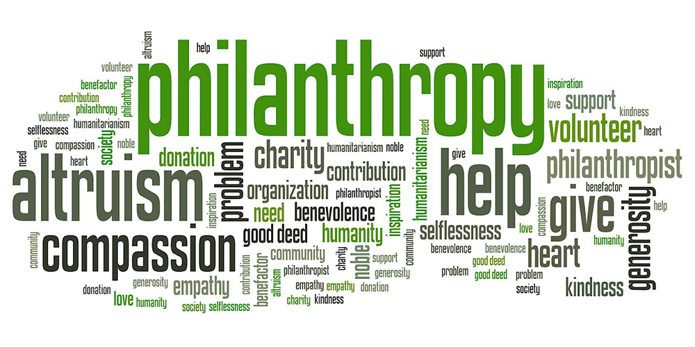
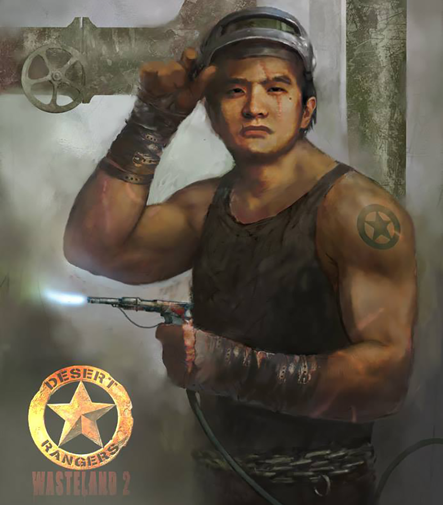

1
1 2
2 3
3 4
4 5
5Min-Liang Tan was born in Singapore in 1977. Tan is the youngest of four siblings. He is listed as the #21 billionaires in Singapore. Min-Liang Tan went to school to be a lawyer.

Min-Liang Tan
About
Education
Min-Liang Tan originally want to school to become a lawyer. He attended Raffles university and Hwa Chong Junior Collage prior to attending university. Tan graduated from the National University of Singapore Faculty of Law.

Career
Tan was an advocate and solicitor of the Supreme Court of Singapore. In 1999, Tan and Robot Krakoff designed the world for first gaming world. In 2005, Tan takes the role CEO and creative director.

Philanthropy
Tan contributed $10,000 to the Wasteland 2 Kickstarter. Min-Liang Tan also donated $10,000 to raise funds for ALS. He also donated $10,000 to Motor Neuron Disease foundation.

Fun Facts
Min-liang Tan has made several appearences in movies and games. One game is Wastland 2 he was added in as a ranger. He was in Torment: Tides of Numenera as Min of Tan Liang, also was in Holy Potatoes as Cheif Min. The movie he had a cameo in was Dead Rising: Watchtower as a zombie.